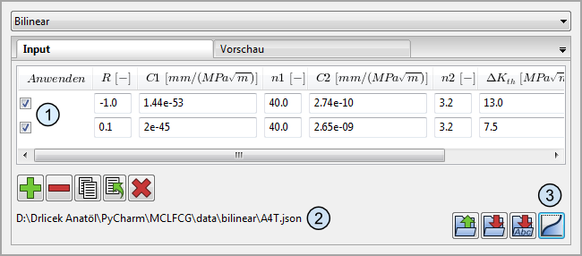

MANUAL
Materials Center Leoben Forschung GmbH
Roseggerstraße 12
8700 Leoben
T: +43 3842/45 9 22-0
F: +43 3842/45 9 22-500
1. Einleitung
INARA (INtegrity Assessment for Railway Axles) ist eine Software zur Berechnung des Ermüdungsrisswachstums in Radsatzwellen. Mögliche Einsatzgebiete sind Lebensdauerberechnungen in Konstruktion, Instandhaltung und Schadensanalyse. Das Risswachstum kann mittels verschiedener frei wählbarer Rissfortschrittsgesetze unter Verwendung unterschiedlicher Integrationsmethoden bis zu einem definierbaren Abbruchkriterium berechnet werden. Das Programm besteht aus einer graphischen Benutzeroberfläche (GUI) und einem textbasierten Solver. Die Berechnung selbst erfolgt im Solver, der eine Datei mit sämtlichen notwendigen Parametern (Inputfile, *.json) erwartet. Das Inputfile kann vom Benutzer selbst erstellt werden; der einfachere Weg ist aber, das Inputfile in der graphischen Benutzeroberfläche automatisch erstellen zu lassen; die Benutzeroberfläche ermöglicht auch den Aufruf des Solvers und das Betrachten der Ergebnisse. Die Ergebnisse einer Berechnung werden in einer Datenbank (*.db) gespeichert, auf welche mit Hilfe der graphischen Benutzeroberfläche von INARA zugegriffen werden kann. Hier können die berechneten Rissfortschrittsdaten beliebig kombiniert und in Diagrammen graphisch dargestellt oder in Tabellenform exportiert werden. Zusätzlich zur Datenbank werden die Ergebnisse nach Abschluss einer Rechnung nochmals aus der Datenbank ausgelesen und in ein Textfile (*.txt) gespeichert. Außerdem ist es möglich einen Bericht erstellen zu lassen. Der Bericht ist eine PDF-Datei. Diese protokolliert zusätzlich zu den Ergebnissen einer Berechnung auch sämtliche vom Anwender getätigten Eingaben. Im Folgenden wird in Abschnitt 2 die graphische Benutzeroberfläche von INARA und in Abschnitt 3 der Aufbau des Inputfiles beschrieben.2. Graphische Benutzeroberfläche
Die graphische Benutzeroberfläche von INARA kann- zum Erzeugen von Inputfiles,
- zum Aufrufen des Solvers sowie
- zum Auswerten von Ergebnisfiles
Gliederung und Aufbau
Die Berechnungssoftware INARA ist abgesehen von Titel-, Menü- und Statusleiste in drei Bereiche gegliedert (siehe Abbildung 1):- Navigationsbereich: Hier sind alle zur Rissfortschrittsberechnung notwendigen Schritte chronologisch von oben nach unten angeordnet.
- Eingabe- und Ergebnisbereich: In diesem Bereich finden sämtliche Benutzereingaben zu dem jeweils im Navigationsbereich ausgewählten Schritt statt. Auch die Ergebnisse einer Rissfortschrittsberechnung werden in diesem Bereich dargestellt.
- Informationsbereich: Hier werden di Arbeitsschritte des Benutzers protokolliert und Informationen ausgegeben. Auch die aktuelle Risslänge und die dazugehörigen Lastwechsel werden während einer Berechnung immer wieder im Informationsbereich ausgegeben.
Achse
Geometrie
In Abb. 2 ist die Eingabemaske für eine zyklisch belastete Achse dargestellt. Die Größe der Achse wird über den Radius R (Abb. 2-1) definiert. Es kann der Rissfortschritt sowohl in einer Vollwelle als auch in einer Hohlwelle berechnet werden. Um den Innradius einer Hohlwelle eingeben zu können, muss vorher die Checkbox neben dem Innenradius $R_i$ angehakt sein. Zur Berechnung des Risses wird ein halbelliptischer Startriss (bzw. Startkerbe) über die Risstiefe $a_0$ und das Halbachsenverhältnis $a/c$ festgelegt (Abb. 2-2). Die eingegebenen Achs- bzw. Rissgeometrien werden auch graphisch dargestellt. Zum erstmaligen Zeichnen oder zum Aktualisieren der Vorschau muss auf den Button mit dem grünen Häkchen geklickt werden (Abb. 2-3).Spannungsfeld
Die bei der Rissfortschrittsberechnung auftretenden Spannungen werden in Eigenspannungen und Biegespannungen aufgeteilt. Biegespannungen entsprechen den auftretenden Lastspannungen und werden in Schritt 2 definiert.Eigenspannung (Abb. 2-4)
Eigenspannungen beschreiben hingegen eventuell vorhandene Eigenspannungsfelder oder Spannungsfelder durch den Presssitz. Solche Eigenspannungsfelder können aus Dateien eingelesen (Abb. 2-5), graphisch dargestellt (Abb. 2-11) und auch wieder entfernt werden (Abb. 2-6). Eigenspannungsfelder haben eine radialsymmetrische Spannungsverteilung und müssen intern gefittet werden hierzu kann im Dropdownmenü (Abb. 2-7) ein fit oder die WFM-Methode gewählt werden.Um beurteilen zu können welcher Fit am besten zu den gewählten Daten passt kann man sich ein Diagramm mit den Fits anzeigen lassen (Abb. 2-8).Biegespannung (Abb. 2-9)
Das Biegespannungsfeld kann entweder analytisch errechnet werden. Dies führt naturgemäß zu einem gleichmäßigen Gradienten. Aber es kann auch eine Datei eingelesen werden die ein ungleichmäßiges Biegespannungsfeld enthält. Um den Verlauf des Biegespannungsfeldes darstellen zu lassen, muss man den Button Abb. 2-10 betätigen. (ACHTUNG: Diese Definition der Biegespannung dient nur der optischen Darstellung und hat nichts mit der späteren Rissfortschrittsberechnung zu tun!)Belastungsart (Abb. 2-12)
Letztendlich kann auch noch zwischen zwei verschiedenen Belastungsarten gewählt werden, nämlich der reinen Biegung und der Umlaufbiegung (Abb. 2-12).SEB
Geometrie (Add. 3-1)
Die Eingabemaske für einen zyklisch belasteten Flachstab (SEB-Probe) ist in Abb. 3 dargestellt. Die Geometrie des Flachstabes wird mit der Höhe $W$ und der Dicke $B$ definiert. In diesem Flachstab kann nun das Risswachstum eines über die Dicke gleichmäßig wachsenden Risses mit einer Anfangsrisslänge $a_0$ (Abb. 3-2) berechnet werden. Die Anfangsrisslänge $a_0$ kann Werte > 0 und kleiner $W$ annehmen. Die Geometrie des Flachstabes und die Anfangsrisslänge können beliebig verändert werden. Mit einem Klick auf das grüne Häkchen wird die Vorschau entsprechend den getätigten Veränderungen aktualisiert (Abb. 3-3).Belastungsart (Add. 3-4)
Zusätzlich ist es möglich, die Belastungsart auszuwählen. Hier wird zwischen Drei-, Vier- und Achtpunkt-Biegebelastung unterschieden.
Blockdefinition (Schritt 2)
In diesem Schritt können Blocklastfolgen erstellt und bearbeitet werden. Eine neue Blocklastfolge kann entweder mit einem Doppelklick auf ‚Lastdefinition‘ im Navigationsbereich oder durch Drücken eines Buttons im Eingabebereich hinzugefügt werden. Im Eingabebereich befindet sich auch ein Button zum Einlesen bereits vorhandener Blocklastfolgen. Neu hinzugefügte Blocklastfolgen werden automatisch benannt (Blocklastfolge 0 .. Blocklastfolge X) und sofort im Navigationsbereich angezeigt. Mit Rechtsklick auf eine bestimmte Blocklastfolge kann diese umbenannt oder gelöscht werden.Jede Blocklastfolge kann eine beliebige Anzahl an Blöcken enthalten. Die einzelnen Blocklasten werden mit der Anzahl der Lastwechsel N (oder der kumulierten Lastwechsel N), dem Spannungsverhältnis R$_\sigma$ und der Spannungsamplitude $\sigma_a$ definiert (Abb. 4). Die einzelnen Blöcke werden mit einer fortlaufenden Zahl gekennzeichnet (Abb. 4-10). Durch einen Mausklick auf diese fortlaufende Zahl wird der jeweilige Block markiert. Über eine Buttonleiste ist es möglich, einen neuen Block hinzuzufügen (Abb. 4-1), einen markierten Block zu löschen (Abb. 4-2), zu kopieren (Abb. 4-3) oder einzufügen (Abb. 4-4). Die Position eines markierten Blocks kann innerhalb einer Blocklastfolge nach oben bzw. nach unten (Abb. 4-5) verschoben werden. Um die Gesamtzahl der Lastwechsel einer bestehenden Blocklastfolge – bei gleichbleibendem Verhältnis der Dauer der einzelnen Blöcke zueinander – zu kürzen, kann ein Teiler angegeben werden, durch welchen die Lastwechsel der aktuellen Blocklastfolge geteilt werden (Abb. 4-6). Die neu erzeugte Blocklastfolge wird automatisch im Navigationsbereich eingefügt und kann weiter bearbeitet werden. Ist der Teiler größer als die kleinste Blockdauer (Anzahl der Lastwechsel $N$ eines Blocks), dann kann die entsprechende Blocklastfolge nicht aufgeteilt werden.
Um eine Blocklastfolge zu löschen, stehen zwei Möglichkeiten zur Verfügung:
- Durch einen Klick mit der rechten Maustaste auf die entsprechende Blocklastfolge und auswählen des Menüpunktes Löschen.
- Durch Betätigen des Entfernen-Buttons (Abb. 4-7).


Last-Zeit-Reihenfolge (Schritt 3)
Im Schritt 3 wird nun die Last-Zeit-Reihenfolge (LZR) festgelegt, welche zur Rissfortschrittsberechnung herangezogen werden soll. Dieses Last-Zeit-Reihenfolge kann sich aus einem oder beliebig vielen in Schritt 2 definierten Blocklastfolgen zusammensetzen (siehe Abb. 6).Der Eingabebereich von Schritt 3 gliedert sich dazu in zwei Textfelder:
- im linken Textfeld sind alle definierten Blocklastfolgen aufgelistet (Abb. 6-1) und
- im rechten Textfeld sidn diejenigen Blocklastfolgen die zur Berechnung des Rissfortschritts herangezogen werden (Abb. 6-2)

Materialgesetz (Schritt 4)
Im Schritt 4 muss das zur Berechnung herangezogene Materialgesetz festgelegt und die jeweiligen Parameter definiert werden. Es stehen insgesamt vier Materialgesetze zur Auswahl:- MCL-Kurzriss
- NASGRO
- Bilinear
- Tabellarisch
Dieses Materialmodell basiert auf der Veröffentlichung ‚Modified NASGRO equation for physically short cracks‘ und kann das Verhalten kurzer Risse – welche ein atypisches Risswachstumsverhalten aufweisen – gut abbilden. Zusätzlich unterscheidet dieses Materialgesetz zwischen Kerben und Rissen (siehe dazu die Veröffentlichung ,Modified Kitagawa-Takahashi diagram accounting for finite notch depths‘), welche eine deutlich unterschiedliche Risswachstumsgeschwindigkeit aufweisen können. Bei langen Rissen liefert das Materialgesetz MCL-Kurzriss dasselbe Ergebnis wie das NASGRO-Modell.
Dieses sehr gängige Risswachstumsmodell kann den Verlauf der Risswachstumskurve für genügend lange Risse gut beschreiben (d.h. für Risse, welche das Rissschließen vollständig aufgebaut haben). Da das beschleunigte Wachstum kurzer Risse allerdings nicht berücksichtigt wird, kann es zu nichtkonservativen Ergebnissen führen!
Hier kann ein einfaches, zweistufiges Ermüdungsrisswachstumsgesetz definiert werden. Im Gegensatz zu den ersten beiden Materialgesetzen müssen hier Parameter für mindestens zwei RWerte definiert werden. Zwischen diesen R-Werten wird dann linear interpoliert.
Für dieses Materialmodell sind einzelne Punkte der Risswachstumskurve tabellarisch zu hinterlegen. Gleich wie beim Materialgesetz Bilinear müssen wieder mindestens zwei Werte für zwei verschiedene R-Werte angegeben werden.
Der Eingabebereich für das tabellarische Materialgesetz unterscheidet sich von den anderen Materialgesetzen (siehe Abb. 8). Beim tabellarischen Materialgesetz muss für jeden R-Wert eine eigene Tabelle erstellt werden (Abb. 8-1), welche Spannungsintensitätsfaktoren und zugehörige Rissfortschrittsraten enthält. Alle definierten Rissfortschrittskurven werden in Registerform im Eingabefenster dargestellt, wobei man zwischen den verschiedenen Kurven (jede Kurve entspricht einem R-Wert) durch einen Mausklick auf das entsprechende Register hin- und herschalten kann (Abb. 8-2). Um eine Kurve für einen neuen R-Wert zu erstellen bzw. hinzuzufügen, muss der in Abb. 8-3 dargestellte Button gedrückt werden. 

Berechnen (Schritt 5)
Abbruchkriterium (Abb. 9-1)
Die Berechnung des Rissfortschritts erfolgt auf Basis der in den Schritten 1-4 vorgegebenen Parameter. Im Schritt 5 muss ein Abbruchkriterium gewählt werden (Abb. 9-1), wobei die Rissfortschrittsberechnung nach einer bestimmten Anzahl von Lastwechseln $N_{max}$ oder nach einer erreichten Risslänge $a_{max}$ gestoppt wird.Einstellungen (Abb. 9-2)
Wie die Rissfortschrittsrechnung durchgeführt werden soll, kann durch die Einstellungen definiert werden. Dabei kann die Schrittweite der Integration $\Delta N$ sowie die Anzahl der zu berücksichtigenden Nachkommastellen beim interpolieren des R-Wertes $R_{digits}$ definiert werden. Je größer $\Delta N$ gewählt wird destso schneller, aber ungenauer ist die Rechnung. Ähnliches gilt für $R_{digits}$; dieser Wert hat Auswirkungen auf die Geschwindigkeit und den Speicherverbrauch bei Interpolationen und Extrapolationen). Weiters kann zwischen verschiedenen Integrationsmethoden gewählt werden.Extrapolationseinstellungen (Abb. 9-3)
Die Extrapolations-Einstellungen sind nur bei den Materialgesetzen Bilinear und Tabellarisch zu definieren. Sie legen das minimale bzw. maximale zur Berechnung herangezogene Spannungsverhältnis $R_{min}$ bzw. $R_{max}$ fest. Tritt während der Rissfortschrittsrechnung ein Spannungsverhältnis kleiner als $R_{min}$ bzw. größer als $R_{max}$ auf, wird stattdessen mit den definierten Grenzwerten $R_{min}$ bzw. $R_{max}$ gerechnet.Lastverarbeitung / Abarbeitung der Last-Zeit-Reihenfolge (Abb. 9-4)
Es kann des Weiteren auch die Art und Weise definiert werden, wie eine Last-Zeit-Reihenfolge abgearbeitet werden soll. Dabei kann zwischen Sequentiell und Gewichtet unterschieden werden:Last-Reihenfolge-Effekte (Abb. 9-7)
Hier kann eingestellt werden ob Effekte wie Überlasten oder oxidinduziertes Rissschließen beachtet werden sollen. Welche Effekte verfügbar sind ist von den Materialgesetzen abhängig. Der 'retardation factor' gibt das minimale Risswachstum an das auf jeden Fall auftritt, damit die Rechnung nicht zu einem kompletten Stillstand kommt.Start/Stop der Berechnung (Abb. 9-5,6)
Gestartet wird eine Berechnung schließlich durch einen Mausklick auf ‚Berechnung starten‘ (Abb. 9-5). Eine laufende Berechnung kann auch jederzeit mit einem Klick auf den Button Abbrechen (Abb. 9-6) beendet werden. Die Ergebnisse der Berechnung sind dann im letzten Punkt des Navigationsbereiches Ergebnisse dargestellt.
Ergebnisse
Hier werden die Ergebnisse der durchgeführten Berechnungen aufgelistet und mit einer Zufallsbezeichnung versehen. Mittels Rechtsklick auf das entsprechende Ergebnis kann dieses mittels Kontextmenü umbenannt oder gelöscht werden.Löschen
Wenn man ein Ergebnis in INARA löscht so werden seine Inputdatei, die zugehörige Datenbank und das daraus generierte Textfile gelöscht. Falls das Verzeichnis in dem diese Dateien lagen nun leer ist wird auch dieses entfernt. Wenn nun aber ein Bericht erzeugt wurde so wird dieser nicht automatisch gelöscht und das Verzeichnis bleibt bestehen. Dieses Verhalten liegt in der Tatsache begründet, dass man den Solver von INARA auch ohne graphischer Oberfläche starten kann und dessen Rechnungen und Datenbanken von den Nutzern meist in nur einem Verzeichnis gesammelt werden. All diese Ergebnisse können aber auch von der graphischen Oberfläche aus geöffnet werden. Falls nun der Benutzer eine dieser Rechnungen über INARA löscht dürfen nur die eindeutig der Rechnung zuordenbaren Dateien entfernt werden und nicht einfach ganze Verzeichnisse gelöscht werden. Die PDF-Reporte sind nicht einfach automatisiert einer bestimmten Rechnung zuordenbar da sie zu oft von Nutzern erstellt, umbenannt und oder verschoben werden.Neuer Plot
Ist ein Ergebnis ausgewählt, kann man sich die Ergebnisse der Rissfortschrittsberechnung, wie in zum Beispiel in Abbildung 10, graphisch darstellen lassen. Das Anzeigen der Ergebnisse funktioniert über den Button "Neuer Plot". Es öffnet sich ein Auswahldialog, bei dem die Werte für xx uns y-Achse wählbar sind.Zur Auswahl stehen:
| Wert | Einheit | Bezeichnung |
|---|---|---|
| $a$ | $[mm]$ | Risstiefe |
| $s$ | $[mm]$ | Rissbreite an der Oberfläche (Vorsicht: $s$ entspricht nur der halben Rissbreite an der Oberfläche) |
| $\frac{da_A}{dN}, \frac{da_S}{dN}$ | $[\frac{mm}{Lastwechsel}]$ | Risswachstumsgeschwindigkeit in die Tiefe und an der Oberfläche |
| $\Delta K_A, \Delta K_S$ | $[MPa\sqrt{m}]$ | Schwingbreite des Spannungsintensitätsfaktors |
| $N$ | $[-]$ | Anzahl Lastwechsel |
| $R_A, R_S$ | $[-]$ | Spannungsverhältnis |
| $id$ | $[-]$ | Eine fortlaufende id für alle Werte |
| $K_{min}$ | $[MPa\sqrt{m}]$ | Minimaler Spannungsintensitätsfaktor |
| $K_{max}$ | $[MPa\sqrt{m}]$ | Maximaler Spannungsintensitätsfaktor |
| $\sigma_a$ | $[MPa]$ | Spannungsamplitude |
| $a/c$ | $[-]$ | Verhältnis von Risstiefe zu "Rissbreite" (Eigentlich das Verhältnis von Nebenachse zu Hauptachse beim halbelliptischen Riss) |
| $a/r$ | $[-]$ | Verhältnis von Achsenradius zu Risstiefe |

In Zwischenablage kopieren
Um die Ergebnisse der Rechnung in die Zwischenablage zu kopieren anstatt sie graphish zu plotten dient der Button "In Zwischenablage kopiere". Wenn dieser geklicht wird öffnet sich das selbe Dialogfenster wie beim Button "Neuer Plot". Hier sind nun die gewünschten Spalten/Daten zu wählen. Nach einem Klick auf OK sind die Daten in der Zwischenablage und können in zum Beispiel Excel oder Origin eingefügt werden. (mittels Einfügen Menü oder Tastenkombination [Strg]+[V]).Bericht erstellen
Die Ergebnisse können auch in einem PDF-Bericht zusammengefasst werden. Nach einem Klick auf den Button "Bericht erstellen" öffnet sich ein Informationsdialog, der den Nutzer warnt, dass das Erstellen des Berichtes einige Zeit in Anspruch nehmen kann. Nach dem Schließen des Dialoges beginnt die Erstellung des Berichtes. Im Bericht sind die Eistellungen mit denen der Solver gelaufen ist zusammengefasst. Außerdem ist eine Tabelle mit ausgewählten Werten aus der Datenbank erhalten. Es werden soviele Zeilen dargestellt wie auf einer A4-Seite Platz finden. Die erste Zeile enthält die Startwerte, die letzte die Endwerte und alle Zeilen dzwischen sind ein mölichst geleichmäßiger Auszug aus der Datenbank. Auf der letzten Seite ist ein Plot der Risstiefe $a$ über $N$ in blau zu sehen; die roten Kreuzchen auf diesem Plot entsprechen den Daten aus der oben erwähnten Tabelle.Daten inspizieren
Hier gibt es die Möglichkeit die im Verlauf der Berechnung ertselllten Dateien zu öffnen ohne den Explorer nutzen zu müssen.JSON-Datei öffnen
Öffnet die Solverdatei mit dem in Windows festgelegten Standardprogramm. Falls man vor hat den Solver in Zukunft ohne graphischer Oberflache zu nutzen sind die hier erstellten Solvedateien ein sehr guter Ausgangspunkt.Datenbank öffnen
Öffnet die Datenbank mit dem in Windows festgelegten Standardprogramm.Textdatei öffnen
Öffnet die Textdatei mit dem in Windows festgelegten Standardprogramm.3. Aufbau des Inputfiles
Wie bereits in der Einleitung erwähnt, wird von Entwicklerseite empfohlen, ein Inputfile (*.json) über die graphische Benutzeroberfläche zu erstellen. Da aber auch die Möglichkeit besteht, den Solver extra zu starten (mainsolver.exe), wird hier am Beispiel der obigen Rechnung der Aufbau eines *.json-Files beschrieben. Das JSON-Dateiformat unterstützt keine Kommentare. daher kann das folgende Beispiel nicht einfach kopiert und vom Solver ausgeführt werden. Es müssten vorher alle Kommentare entfernt werden."type": "file"
Wenn INARA eine json Datei erstellt, dann wird es alle benötigten Daten in die JSON-Datei schreiben. Für einen Nutzer der nur den Solver verwendet ist es jedoch ümständlich und zeitraubend alle Daten (vielleicht sogar von Hand) einzutragen. Daher gibt es bei manchen Abschnitten die Möglichkeit den "type" von "data" auf "file" abzuändern. Dann erwartet der solver keinen Abschnitt "data" voller Zahlen mehr, sonderen ein Schlüsselwort "file", das den Pfad zu einer Datei angibt. Dies ist für die folgenden Abschnitte möglich:bending_stress / Biegespannungen:
Dateityp: .csv- Spalten: x$[mm]$, y$[mm]$, sigma$[MPa]$
- Trennzeichen: Tabulator \t
- Kommentare: #
residual_stress / Eigenspannungen:
Dateityp: .csv- Spalten: r$[mm]$, sigma$[MPa]$
- Trennzeichen: Tabulator \t
- Kommentare: #
load_composition / Lastzusammenstellung:
Dateitypen: .json, .enc oder .csv- .json:
- Enthält Listen für R-Wert, cycles, amplitude, und Einmal-Lasten
- .enc:
- ist nur ein vom mcl-verschlüsseltes .json file (enc steht für encrypted)
- .csv:
- Trennzeichen: Tabulator \t
- Kommentare: #
- Spaltenreihenfolge: cycles$[-]$, R-Wert$[-]$, amplitude$[Mpa]$, one_time$[-]$